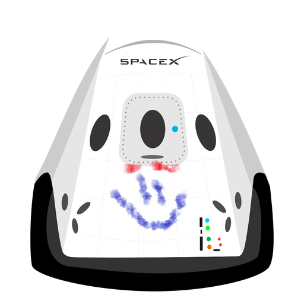

Hyperblog
Your first option in blogs
Este es el título atractivo e interesante del post
Y este es el párrafo de inicio donde vamos a <<<<<<< HEAD explicar las cosas increíbles que se pueden hacer con ramas

>>>>>>> 9493fa1d76b3223322136d97491216c407a736c9
Los blogs son la mejor formar de compartir información y tus ideas.
Muchas más que ir a conferencias o salir en Youtube. Excepto si eres
un rockstar. Pero estad´isticamente no lo eres... por ahora.
<<<<<<< HEAD
Suscriíbete y dale like :D
=======
Suscriíbete y dale like :D
>>>>>>> 9493fa1d76b3223322136d97491216c407a736c9